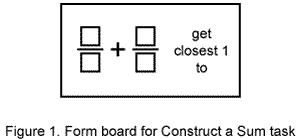

|
||||||||||||||||||||||||||||||||||||||||||||||||||||||||||||||||||||||||||||||||||||||||||||||||||||||||||||||||||||||||||||||||||||||||||||||||||||||||||||||||||||||||||||||||||||||||||||||||||||||||||||||||||
|
CONSTRUCT
A SUM:
A Measure Of Children's Understanding Of Fraction Size |
||||||||||||||||||||||||||||||||||||||||||||||||||||||||||||||||||||||||||||||||||||||||||||||||||||||||||||||||||||||||||||||||||||||||||||||||||||||||||||||||||||||||||||||||||||||||||||||||||||||||||||||||||
|
Merlyn J. Behr,
(Northern
Illinois University) |
||||||||||||||||||||||||||||||||||||||||||||||||||||||||||||||||||||||||||||||||||||||||||||||||||||||||||||||||||||||||||||||||||||||||||||||||||||||||||||||||||||||||||||||||||||||||||||||||||||||||||||||||||
This report from the Rational Number Project concerns the development of a quantitative concept of rational number in fourth and fifth graders. In a timed task, children were required to select digits to form two rational numbers whose sum was as close to 1 as possible. Two versions of the task yielded three measures of the skill. The cognitive mechanisms used by high performers in individual interviews were characterized by a flexible and spontaneous application of concepts of rational number order and fraction equivalence and by the use of a reference point. Low performers tended either not to use such cognitive mechanisms or to apply concepts in a constrained or inaccurate manner. |
||||||||||||||||||||||||||||||||||||||||||||||||||||||||||||||||||||||||||||||||||||||||||||||||||||||||||||||||||||||||||||||||||||||||||||||||||||||||||||||||||||||||||||||||||||||||||||||||||||||||||||||||||
|
An understanding of fraction size is important for children in performing computations and solving problems that involve rational number ideas. Assessing children's understanding of fraction size is difficult. Skill with order and equivalence provides one indicator. Other indicators are the skills of estimating the location of a fraction on a number line or estimating the outcome of an operation with fractions (Wachsmuth, Behr, & Post, 1983). This paper considers children's ability to construct two rational numbers whose sum is close to 1. We view the task as another measure of the quantitative concept of rational number. The research literature concerning children's ability to estimate the results of arithmetic computations is sparse, especially when the computations involve rational numbers. The Second National Assessment of Educational Progress (Carpenter, Corbitt, Kepner, Lindquist, & Reys, 1980) found that only 24% of the 13-year-olds and 37% of the 17-year-olds in the sample were able to correctly estimate the sum of 12/13 and 7/8 given the choices of 1, 2, 19, and 21. The two most frequent responses were 19 and 21. The research literature (Bright, 1976; Buchanan, 1978; Payne & Seber, 1959) suggests that children's ability to make good estimates of computations with whole numbers is related to their concept of number size. In a similar manner it seems reasonable that children's quantitative perception of rational number could be indicated by various estimation tasks. These include estimating an indicated sum, finding a rational number closer to a given rational number than another given one, finding a rational number between two other rational numbers, and bracketing a given rational number by two rational numbers. This paper considers the task of constructing a two-addend rational number sum close to 1. The students were restricted to a given set of numerals and constrained with a set time limit. Success on the task appears to require not only an accurate perception of the magnitude of each rational number addend constructed but also an ability to combine the magnitudes. The purposes of the
investigation were to gain (a) information about the degree of children's
accuracy in performing the task and (b) insights into the cognitive mechanisms
used by successful children. METHOD The present study was conducted by the Rational Number Project during 1982-83 in the context of assessing the development of the rational number concept in children (Behr, Post, Silver, & Mierkiewicz, 1980). It is part of a larger set of investigations whose purpose is the assessment of children's quantitative notion of rational numbers (Wachsmuth et al., 1983). It is one of several studies arising from an extended teaching experiment conducted while the subjects were in fourth and fifth grade. The teaching experiment extended over 30 weeks, starting at about the middle of Grade 4. Subjects The subjects of the teaching experiment were 8 children from DeKalb, Illinois (Site A), selected to reflect the full range of ability, and 34 homogeneously grouped children of average ability from a relatively high-achieving school in Minneapolis, Minnesota (Site B). Data from two videotaped clinical interviews with each of the 8 DeKalb children and 8 Minneapolis children were used in this study. The children had received instruction on estimating whole number sums by rounding. At the time of the interviews, the children had had considerable experience with the addition of like and unlike fractions and with order and equivalence tasks. They had not been given any formal instruction on strategies that might be used in estimating the sum of two rational numbers. Task Version 1 of the Construct a Sum task consisted of six cards with the numerals 1,3,4,5,6,7 and a form board as shown in Figure 1. Version 2 used cards with 11, 3, 4, 5, 6, 7. Version 1 was presented in an interview following 20 weeks of instruction, and both versions were presented in an interview after 27 weeks of instruction. The child was directed to "put number cards inside the boxes to make fractions so that when you add them the answer is as close to 1 as possible, but not equal to 1." To discourage the use of algorithms, the child was encouraged to estimate, and a time limit of 1 minute was imposed.  A successful solution within the constraints required at least:
Thus a multifaceted domain of children's rational number knowledge was evoked in the task, including operations with fractions and fraction size. Estimation was involved in that the children were encouraged to think about size in ranges rather than to compute unique answers using algorithms. Because of the time limit, a trial-and-error method of choosing any two fractions and working out the addition algorithm would not have been successful. The children were informed accordingly: "You won't have time to work out the addition. What you have to do is think about how big each fraction is and then think about how big the answer will be." In Version 1 it is possible to make 1 exactly (4/6 + 1/3). Some children quickly found this sum. The second constraint - to get close to 1, but not to get 1 itself - required the children to deal with the magnitude of the fractions. For example, if 1/3 cannot be added to 4/6, then a judgment must be made as to what fraction, close in size, can replace 1/3 (1/5?, 1/7?, 3/7?, . . .) so that the resulting sum is as close to 1 as possible. Consequently, we expected that children who had a workable concept of rational number size would succeed in the task, whereas children lacking such a quantitative notion would exhibit considerable difficulty. Scoring The deviation from 1 of each child's responses was computed as a percent. The arithmetic mean of the three deviations for each child was used to define performance categories of high, middle, and low scores. A high score meant that the average deviation was less than or equal to 10%; a middle score, that the average deviation was between 10 and 30%; and a low score, that the average deviation was greater than or equal to 30%. The criteria were set on a pragmatic basis without theoretical guidelines about what constituted high, middle, or low scores. RESULTS Table 1 gives each
subject's response for each task and the average deviation for the three
tasks. The percentage deviations varied from 2% to 392% with an average
percentage deviation over all children on all tasks of 55%. Table
1
Note. nr = no response. On the basis of the children's explanations, their responses were sorted into five categories plus an other category. The categories suggest the cognitive strategies that the children used to perform the task. The sorting was first carried out independently by two of the investigators; the results were compared, and the few discrepancies were resolved. Almost complete agreement was found between the independent categorizations. Sample responses exhibiting the subjects' thinking on the tasks are given below with descriptions of the categories. Especially observable in the responses is the variation in the children's use of estimation, fraction order, and equivalence concepts and in their reliance on a correct or incorrect computational algorithm. Correct Reference Point Comparison (CR) The explanations categorized as CR indicated a successful attempt to estimate the constructed rational number sum by using 1/2, 1, or some other fraction as a point of reference. The spontaneous use of fraction equivalence and rational number order was evident. Bert:(Makes 3/6 + []/[], pauses, thinks, changes to 516 + []/[], and finally to 5/6 + 1/7.) Interviewer: Tell me how you thought about the problem. Bert: Well, umm. . ., five sixths is. . ., well, a sixth is larger than the seventh, and so there [5/6] is one piece away from the unit covered. A seventh is smaller, so a seventh can fit in there [between 5/6 and the whole unit] without covering the whole. Kristy: (From 11 3 4 5 6 7 constructs 6/11 + 3/7 and changes to 5/11 + 3/7.) Well, five and a half is half of eleven [pointing to 5/11], and [pointing to 3/7) three and a half is half of seven, so it would be one away from.... [I changed 6/11 to 5/11] ... because [pointing to 6/11 ] that would be a little more, and that's [pointing to 3/7) less. than one [half].... I was afraid they'd get exactly 1. (Recall that sums of 1 were not permitted.) Mental Algorithmic Computation (MC) The MC explanations indicated that the child did a mental computation to carry out a correct standard algorithm (e.g., common denominator) to determine the sum of the generated fractions. The spontaneous use of fraction equivalence and rational number order was also evident in these responses. Kristy: (Using 1 3 4 5 6 7 makes 1/3 + []/4, then changes to 1/3 + 4/5.)... If you find the common denominator, twelve, but.... And then four times one would be four [explaining the change of []/4 to 4/5], but then three times ... I didn't have a 2 or anything [among the number cards given and remaining] and I used up my 3 so.... (Observe what Kristy is apparently doing: 1/3 is equivalent to 4/12. How many more twelfths to get close to 1? This is determined from []/4 or 3 x []/12. Realizing that she has only 5, 6, or 7 to choose for the box, each of which gives too many twelfths, she changes the denominator to 5 and now must do the same type of thinking with fifteenths.) Incorrect Reference Point Comparison (IR) The IR explanations indicated that the child attempted to estimate the constructed rational number sum by using 1/2, 1, or some other fraction as a point of reference. Little understanding of fraction equivalence and rational number order was evident. Jessie: (From 1 3 4 5 6 7 makes 5/6 + 3/4. Points to 5/6.) That's less than a half, and…. If you add, wait ... if you add one third, it would be bigger [than 1]…. [Points to 5/6.] That ... that's bigger than one half… [and 1/3] is less [than 1/2]. (Interviewer again calls her attention to 5/6.) Less than half, wait bigger than, less than half…. Mack: (From 11 3 4 5 6 7 makes 4/6+3/5.) Well, [pointing to 4/6] it had two [sixths] to get.... It would take two…uh…to equal 1, and I thought [pointing to 3/5], and this takes two [fifths]… to get to 1… and the less they [the difference between each fraction addend and 1] are, the greater they'd be [the fraction addends], so I said [the sum] would be a little bit less [than 1] ... [pause] . . . a little bit more than 1. Mental Algorithmic Computation Based on an Incorrect Algorithm (MCI) The MCI explanations indicated that the child used mental computation based on an incorrect algorithm to compute the actual sum. Ted: (From 1 3 4 5 6 7 makes 5/6 + 4/7.) … Well, first I thought, I tried to figure out what would come closest to 1, and I found out that five sixths and four sevenths would come the closest…'cause I used the top number… [If I added them] nine thirteenths. Jeannie: (From 1 3 4 5 6 7 makes 6/7 + 4/3, changes to 6/7 + 3/1.)... This [pointing to 6 and 3] would be 9, and this [pointing to 7 and 1] would be 8. That's [pointing to 8] the whole, and this [9] is one after it [i.e., 1 greater], so it's [i.e., 9/8] close, but not right on the dot. Gross Estimate (G) The G explanations suggested that the child made a gross estimate of each rational number addend but did not make a comparison to a standard reference point and did not use fraction equivalence or rational number ordering. Ted: (From 1 3 4 5 6 7 makes 3/11 + 4/7.)... I wanted to use up the little pieces for the top, … then use the highest number of pieces for the bottom…. Well, if I ever thought if it was equal, or one's less or greater and stuff, I always have to be greater than the top number. The responses in the categories of correct reference point comparison and mental algorithmic computation represent the highest performance on these tasks as measured by the deviation of the constructed sum from 1. (Cases where the constructed sum was equal to 1 were not included in the computation of the average deviation.) The responses categorized as correct reference point comparison (n = 11) had an average deviation of 6% and those as mental algorithmic computation (n = 1) 13%. For the category of incorrect reference point comparison (n = 4), the average deviation of responses was 27%. These percentages can be contrasted to the average deviation of responses in categories other than these three (n = 19), which was 92%. (Two subjects, Andy and Erica, were omitted from these calculations, and from the subsequent discussion, because of incomplete data.) Table 2 gives the
response category by subjects for each of the three tasks. The data in
Table 2 show that among the five children who were ranked as high scorers
on the tasks, 11 of 14 responses (no response was given by Joan on one
task) were in the correct reference point category, and the remaining
3 were in the mental algorithmic computation category. Table
2
Note. nr = no response. See text for key to abbreviations. DISCUSSION The high scorers almost uniformly used estimating procedures in the solution process. These procedures generally referred to some intermediate "reference point" (Trafton, 1978). The high scorers also displayed an ability for the spontaneous and flexible application of fraction order and equivalence concepts. It appears that a combination of skills in estimation and a firm grasp of order and equivalence notions are a prerequisite to success on the task. We view the task as related to the quantitative concept of rational number, and therefore skill on fraction estimation and with fraction order and equivalence seems to provide an important prerequisite link to a good quantitative concept of rational number. Two children who were rated as middle scorers on the task displayed some disposition toward attempting to estimate each addend (sometimes by a reference point process) but not as uniformly nor as accurately as the high scoring children. Moreover, they showed less consistency in the spontaneous and flexible use of rational number order and fraction equivalence concepts. This level of performance appears to be transitional between low and high performance on the task. We hypothesize an interactive relation between order and equivalence on the one hand and estimation on the other. That is, an improved understanding of order and equivalence results in more accurate estimation, which in turn results in a higher level of perception of rational number size. The children ranked as low scorers gave no responses that fell into the correct reference point comparison or mental algorithmic computation categories; all their responses were among the remaining categories or other. These responses indicate an absence of application of order and equivalence concepts and a failure to use the accurate estimation processes, such as the use of a reference point, that were used by the more successful students. Although care must always be exercised when attempting to generalize from a small sample, it is useful to examine in more detail the responses of selected children in this study, especially as the responses relate to their underlying cognitive characteristics. Bert's explanations, such as his response cited above in the correct reference point comparison category, suggest that he imagines episodic experiences associated with the manipulative-based instruction. Bert shows an impressive ability to translate from ideas expressed through manipulative aids to ideas expressed in oral language and written mathematical symbolism. This observation suggests that his thinking is facilitated by the capacity to orally describe and reason with mental images of experiences he has had with manipulative aids. Kristy has the ability to store a long sequence of memory units together with a tremendous ability to manipulate symbols mentally. These characteristics are evident in her mental algorithmic computation response cited above. She is able to mentally "preview" an entire algorithmic sequence. Kristy's and Bert's explanations further demonstrate excellent applications of order and equivalence concepts. Other students displayed less ability to apply these concepts to the task. Jeannie, one of the low scorers, had one response classified as mental algorithmic computation based on an incorrect algorithm and two classified as other. She was chosen for the teaching experiment as a student of middle to-high achievement in general school work and in mathematics. On numerous occasions during the teaching experiment, the participant observers recorded that Jeannie showed a reluctance to work with manipulative aids, frequently cutting such activity short and asking for an algorithm or rule that could be used to obtain answers. We conjecture that her concepts of order and equivalence, rather than being abstracted from manipulative aids, are more likely based on given or self-generated rules or procedures and are therefore not well understood or not available for application. Ted displayed a very imprecise method of estimating fraction size (see the gross estimate category above). Although firm in his understanding that a fraction with a denominator greater than its numerator has a value less than 1, he apparently had made the incorrect generalization that the sum of two such fractions would be less than 1. Given the amount of instructional time, the degree of special attention, the extensive use of manipulative aids, and the amount of time devoted to developing rational number concepts, it is surprising that 20 of the 41 responses (49%) given by these students in the middle of Grade 5 - those responses in the categories of mental computation based on an incorrect algorithm, gross estimate, and other - reflected a process of fraction addition that was based on the incorrect algorithm of adding numerators and denominators or on some other procedure reflecting little or no comprehension of fraction addition or rational number size. The children who gave these responses were of middle and low mathematics ability, representing a significant proportion of the school population. Clearly, the nature of appropriate cognitive mechanisms necessary for an adequate learning of rational number concepts, as well as the nature of optimal sequencing and timing of rational number instruction, must continue to be researched carefully. It is likely that these children would have performed better on a standard textbook exercise such as 3/4 + 1/5 than they did on the Construct a Sum task. The tasks described here may have overwhelmed the cognitive capacity of the less able students. If so, the students may have elected the course of least resistance the activation of an existing, well-internalized binary addition schema (Davis, 1980). SUMMARY The responses given by the high-scoring children were characterized by a spontaneous and flexible application of rational number order and fraction equivalence concepts and (in most cases) by an accurate application of an identifiable process of estimation (use of a reference point). The responses given by the low-scoring children were characterized by a constrained use of rational number order and fraction equivalence concepts and very uncertain or inaccurate (if any) use of an estimation process. Thus, a high level of understanding for rational number order and equivalence appears necessary to the ability to give estimates of rational numbers and rational number sums. A "workable" combination of (a) order and equivalence and (b) estimation is fundamental to the development of a viable quantitative concept of rational number. Streefland (1982) suggests that the use of estimation can "elicit a global orientation to the problem set, which in turn organises the problem domain and prestructures the solving procedure" (p. 197). We observed this prestructuring behavior in the responses of Bert and Kristy. Bert's solution process for Version 1 is suggestive (see his response in the correct reference point comparison category). In another context, this ability to perceive the global organization of a problem domain was observed in children who were able to use manipulative aids flexibly, translate between different aids, and consistently display thinking that had progressed from being manipulative dependent to that of being manipulative independent (Behr, Wachsmuth, Post, & Lesh, 1984). These issues - estimation, quantitative concept of number, flexibility of thought, translation between representational modes - appear to be interrelated and demand additional attention from researchers. In view of the large percentage of the sample (children in the middle of Grade 5) who were classified as low scorers on the Construct a Sum task used in this study, a comment about its difficulty is required. As an instructional task, the difficulty might lead to undue frustration for the child. From a research point of view, the issue of task difficulty is of less concern. The important point is that the task provides a window through which insights into children's knowledge of rational numbers can be gained. An important question is, what makes the task so difficult? The list of requirements given above for a successful solution suggests that the task is complex and requires the coordination and integration of many units of information. The requirement to do the task mentally, and under a time constraint, places a potentially heavy load on memory and information-processing capacity. This load would appear to be particularly heavy for a child who deals with a fraction as two whole numbers and is unable to perceive it as a conceptual unit. The task would likely force such a child to deal with, and store in short-term memory, at least the following memory units: (a) the numerator and denominator of each fraction addend (4 memory units); (b) a relationship between each numerator-denominator pair (at least 2 units); (c) that addition of two quantities results in a greater quantity; and (d) the size of each addend, that is, its size relative to 1, its size relative to the other addend, and its size relative to the whole (the sum). For the child who has a good concept of fraction size, some of these units would likely integrate into single memory units. Having a knowledge of the numerator-denominator relationship that gives the size of the fraction relieves the child of the need to store individual numerators and denominators as separate memory units and may integrate into one unit all of the following: the numerator and denominator of a fraction, the size relationship between them, the size of the fraction relative to 1, and the size of the interval between it and 1. This integration would make available more information-processing capacity for constructing a sum that met the specified constraints. Further, the solution of the task seems to involve some sophisticated mathematical concepts. When a child has constructed a first addend (less than 1), the problem becomes that of finding the largest fraction (constructible from the given whole numbers) smaller than the interval between it and 1. The new problem seems to have an element of the sophisticated mathematical concept of greatest lower bound. There are other tasks that in an instructional setting might serve as preparation for the Construct a Sum task. Examples are to construct a fraction close but not equal to 1, and then construct another closer still; to construct a fraction closer to 1 than 5/6, 7/8, or ... ; to construct a fraction not equal to 1/2 but closer to 1/2 than 3/7, 3/8,. . . ; to construct a fraction greater than 1 but closer to 1 than 7/8, 5/9, or ... ; and to construct a fraction greater than 1/2 but closer to 1/2 than 3/8, 2/5, or .... Such problems would force the child to think about fraction size in relative terms, either relative to a single reference point or relative to several reference points. Our findings suggest that the Construct a Sum task is more complex than originally meets the eye, and we suggest that it be used in instruction with some caution. With adequate background work, the complexity of the task can force children to integrate separate bits of knowledge about rational number size. REFERENCES Behr, M. J., Post, T. R., Silver, E. A., & Mierkiewicz, D. B. (1980). Theoretical foundations for instructional research of rational numbers. In R. Karplus (Ed.), Proceedings of the Fourth International Conference for The Psychology of Mathematics Education (pp. 60-67). Berkeley: University of California, Lawrence Hall of Science. Behr, M. J., Wachsmuth, I., Post, T. R., & Lesh, R. (I 984). Order and equivalence of rational numbers: A clinical teaching experiment. Journal for Research in Mathematics Education, 15, 323-341. Bright, G. W. (1976). Estimation as part of learning to measure. In D. Nelson & R. E. Reys (Eds.), Measurement in school mathematics (1976 Yearbook of the National Council of Teachers of Mathematics, pp. 87-104). Reston, VA: NCTM. Buchanan, A. D. (1978). Estimation as an essential mathematics skill (Report No. SWRL-PP39). Los Alamitos, CA: Southwest Regional Laboratory for Educational Research and Development. (ERIC Document Reproduction Service No. ED 167 385) Carpenter, T.P., Corbitt, M.K., Kepner, H., Lindquist, M.M., & Reys, R.E. (1980). Results and implications of the Second NAEP Mathematics Assessment: Elementary school. Arithmetic Teacher, 27(8), 10-12, 44-47. Davis, R. B. (1980). The postulating of certain specific, explicit, commonly-shared frames. Journal of mathematical Behavior, 3 (1), 167-201. Payne, J. P., & Seber, R.C. (1959). Measurement and approximation. In The growth of mathematical ideas, Grades K-12 (24th Yearbook of the National Council of Teachers of Mathematics, pp. 182-228). Washington, DC: NCTM. Streefland, L. (1982). The role of rough estimation in learning ratio and proportion - An exploratory research. In A. Vermandel (Ed.), Proceedings of the Sixth International Conference for the Psychology of Mathematics Education (pp. 193-199). Antwerp, Belgium: Universitaire Instelling Antwerpen. Trafton, P. R. (1978). Estimation and mental arithmetic: Important components of computation. In M. N. Suydam & R. E. Reys (Eds.), Developing computational skills (1978 Yearbook of the National Council of Teachers of Mathematics, pp. 196-213). Reston, VA: NCTM. Wachsmuth, I., Behr, M. J., & Post, T. R. (1983, April). Children's quantitative notion of rational number. Paper presented at the meeting of the American Educational Research Association, Montreal. [Received November 1983; revised July 1984] AUTHORS MERLYN J. BEHR, Professor, Department of Mathematical Sciences, Northern Illinois University, DeKalb, IL 60115 IPKE WACHSMUTH, Wissenschaftlicher Assistent, Fachbereich Mathematik, Universität Osnabrück, Albrechtstrasse 28, D4500 Osnabrück, West Germany THOMAS R. POST, Professor of Mathematics Education, College of Education, 240 Peik Hall, University of Minnesota, Minneapolis, MN 55455 |
||||||||||||||||||||||||||||||||||||||||||||||||||||||||||||||||||||||||||||||||||||||||||||||||||||||||||||||||||||||||||||||||||||||||||||||||||||||||||||||||||||||||||||||||||||||||||||||||||||||||||||||||||
|
* We are indebted to the following people who assisted during the research: Adrian Banas, Mark Bergstrom, John Bernard, Kathleen Cramer-Post, Laura Crowley, Debra Hartline, Nancy McQue, Thao Nguyen, and Roberta Oblak. The research was supported in part by the National Science Foundation under Grant No. SED 81-12643. Any opinions, findings, and conclusions expressed are those of the authors and do not necessarily reflect the views of the National Science Foundation. (top) |
||||||||||||||||||||||||||||||||||||||||||||||||||||||||||||||||||||||||||||||||||||||||||||||||||||||||||||||||||||||||||||||||||||||||||||||||||||||||||||||||||||||||||||||||||||||||||||||||||||||||||||||||||